Fluxos e módulos¶
Pipeline ponta a ponta¶

O pesquisador percorre cinco etapas: (1) escolher o alvo e as estruturas; (2) validar o protocolo de docking por redocking; (3) reunir e filtrar moléculas candidatas; (4) triar por clustering, docking de consenso e rede neural; (5) confirmar por dinâmica molecular.
Dependências entre módulos¶

| Dependência | Tipo | Evidência |
|---|---|---|
| ChEMBL → ADMET | FK + status == "done" |
usecases/admet.py:151 |
| ADMET → Clustering | FK + done |
usecases/clustering.py:168 |
| ADMET → Consenso | FK + done |
usecases/consensus.py:273 |
| Clustering e Consenso → NeuroDock (treino) | FK (clustering) + busca por admet_result_id (consenso) |
usecases/neurodock.py:136-153 |
| NeuroDock (modelo) → Triagem | done |
usecases/neurodock.py:307 |
| Consenso → MD | FK + done (receptor dh_prepared) |
usecases/molecular_dynamics.py:163 |
| MD → Análise de trajetória | FK + done |
usecases/molecular_dynamics.py:330 |
| Redocking → Consenso / MD | Apenas convenção de pastas | Sem validação no backend |
Padrão de job¶
ADMET, clustering, consenso, NeuroDock e MD seguem o mesmo padrão (thread daemon + worker + polling). Variações:
o ChEMBL usa asyncio.create_task; o redocking usa BackgroundTasks + subprocess.run (síncrono); a
busca PDB não usa job (streaming SSE).
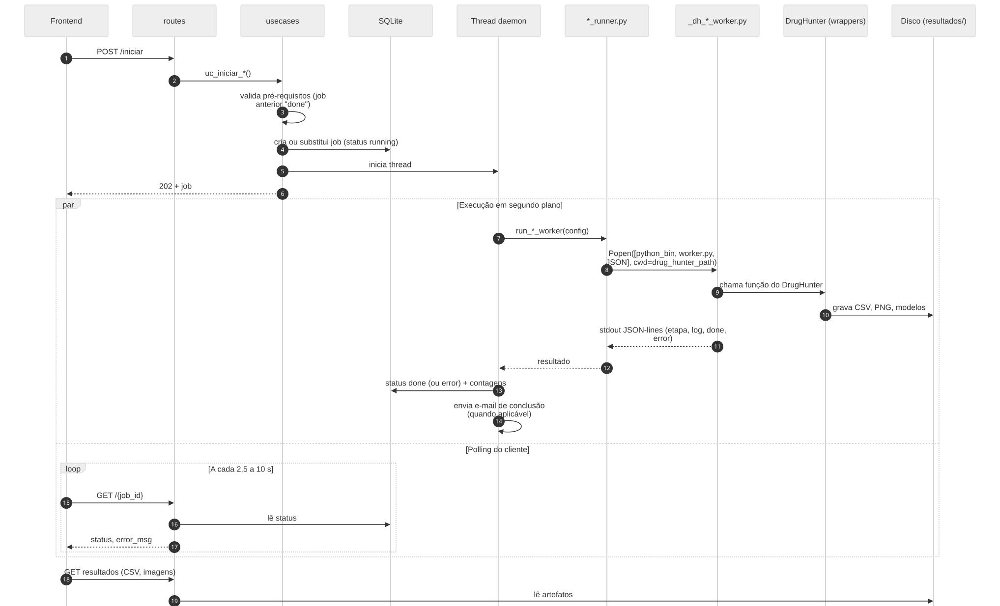

Protocolo runner ↔ worker. O runner dispara python_bin _dh_X_worker.py '<JSON>' com cwd = drug_hunter_path.
O worker insere DH/src no sys.path, faz os.chdir e chama a função do DrugHunter. O progresso volta pelo stdout
em JSON-lines ({"type": "etapa|start|log|warn|done|error", ...}).
Estados¶
cancelled).

Recuperação após reinício do servidor
Se o servidor reiniciar com um job em running, ChEMBL, clustering, consenso, NeuroDock e MD são recuperados no
próximo GET; redocking, ADMET e análise MD permanecem em running — nesses casos o usuário pode usar
Cancelar para liberar o job.
Mecanismo de progresso por módulo¶
| Módulo | Execução | Progresso para a UI | Intervalo de polling |
|---|---|---|---|
| Busca PDB | async generator |
SSE (EventSource) |
tempo real |
| Redocking | BackgroundTasks + subprocess.run |
só status |
10 s |
| ChEMBL | asyncio.create_task + create_subprocess_exec |
status do item + etapa inferida pelos arquivos | 3 s |
| Análise molecular | BackgroundTasks + Popen |
estado inferido do disco | 5 s |
| ADMET | thread daemon | status |
2,5 s |
| Clustering | thread daemon | status |
4 s |
| Consenso | thread daemon | status |
4 s |
| NeuroDock | thread daemon | status |
8 s (modelo) / 5 s (predição) |
| Dinâmica molecular | thread daemon | status |
10 s |
Cancelamento de jobs¶
Qualquer job pending ou running pode ser cancelado pelo usuário, em todos os módulos (redocking, ChEMBL, ADMET,
clustering, consenso, NeuroDock — treino e triagem —, dinâmica molecular e análise de trajetória). Na interface, o
botão Cancelar aparece ao lado do indicador de progresso e pede confirmação; ao final, a tela mostra um cartão
neutro "Processamento cancelado" com a opção de rodar novamente.
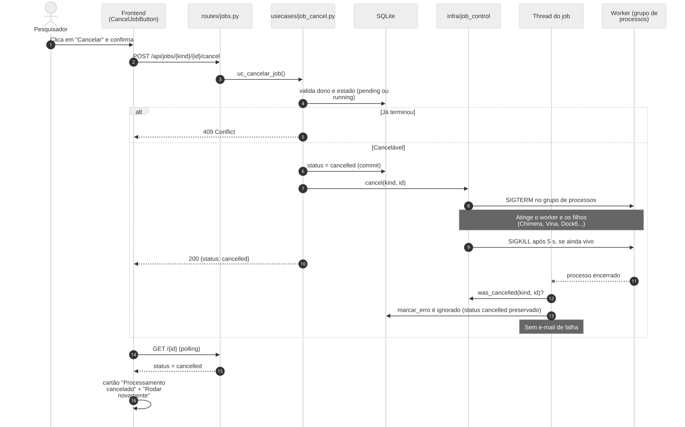

Como funciona (infra/job_control.py, usecases/job_cancel.py, routes/jobs.py):
| Aspecto | Decisão |
|---|---|
| Endpoint | Único para todos os módulos: POST /api/jobs/{kind}/{id}/cancel (200; 404 se não existe ou é de outro usuário; 409 se já terminou) |
| Estado | Novo estado terminal cancelled, distinto de error: cancelar não é falha (sem e-mail de erro) |
| Encerramento | O subprocesso do worker é criado em grupo de processos próprio; o cancelamento envia SIGTERM ao grupo inteiro (worker e filhos: Chimera, Vina, Dock6…) e SIGKILL após 5 s. No Windows, usa taskkill /T |
| Ordem | Primeiro grava cancelled no banco, depois encerra o processo. Assim, o worker que termina em seguida não consegue gravar error por cima (os marcar_* dos services preservam cancelled) |
| Sessão da thread | A thread do job mantém uma sessão de banco longa, com o objeto do job em cache; por isso cada marcar_* relê o estado do banco (populate_existing) antes de checar cancelled. Sem isso, o worker enxergaria o estado antigo (running) e gravaria error por cima do cancelamento |
| ChEMBL | Cancela o grupo inteiro: o item em execução é interrompido e os itens restantes não são iniciados |
| Exclusão | Excluir um job em andamento (DELETE) também encerra o processo |
| Proteção | Se um runner não tiver criado grupo próprio, o sistema nunca usa killpg (derrubaria o servidor); usa terminate() |
Limites
O registro de processos vive na memória do servidor: após um reinício, subprocessos antigos já não são conhecidos. A análise molecular do ChEMBL (consolidação, fingerprints e grafos) roda à parte da coleta e não tem cancelamento: cancelar o job ChEMBL interrompe só a coleta.
1. Autenticação¶
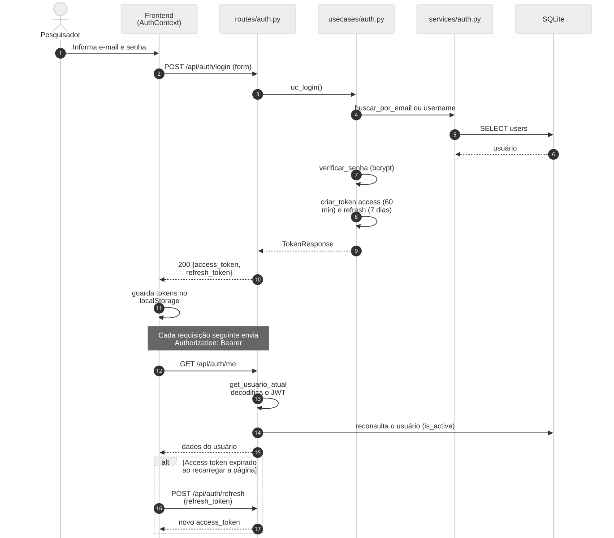

Tokens JWT HS256: access (60 min) e refresh (7 dias), guardados no localStorage. Não há revogação. O
get_usuario_atual reconsulta o usuário a cada requisição e recusa contas desativadas.
2. Busca de estruturas (RCSB)¶
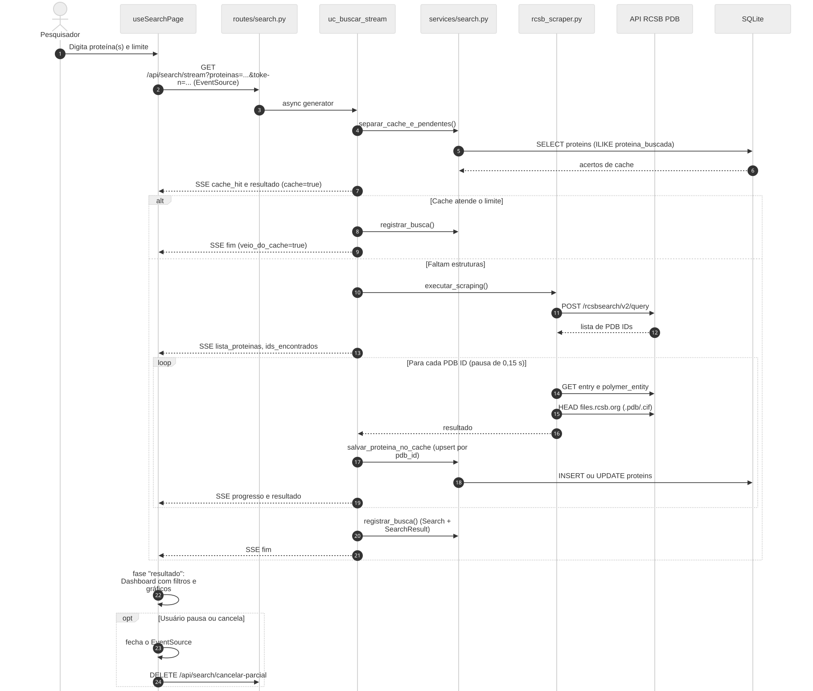


Consulta primeiro o cache (proteins, ILIKE em proteina_buscada); só vai ao RCSB para completar o limite.
O scraper usa urllib e uma pausa de 0,15 s por estrutura. Não usa o DrugHunter (reimplementação deliberada).
3. Download e visualizador¶
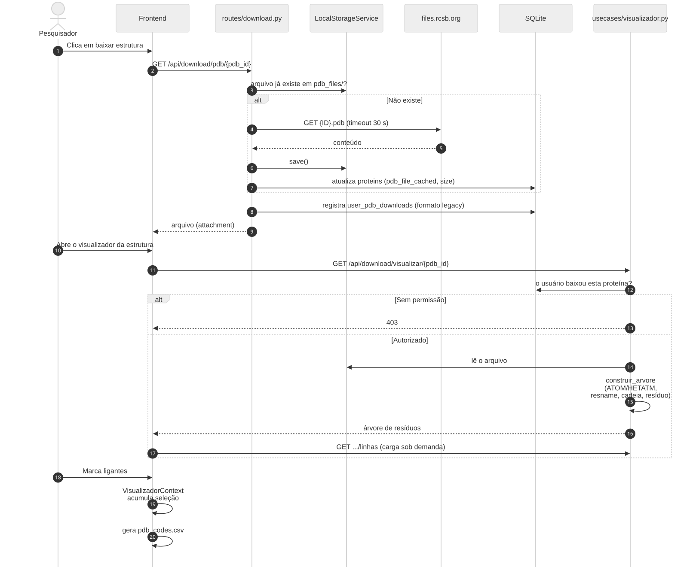

A autorização do visualizador é feita pela existência de user_pdb_downloads para o usuário. O visualizador é uma
árvore de resíduos (ATOM/HETATM → nome do resíduo → cadeia+número), não uma visão 3D; a seleção alimenta o
pdb_codes.csv usado no redocking.
4. Redocking¶
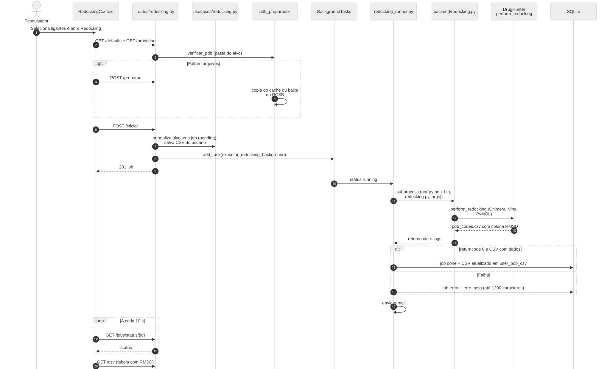

O redocking valida o protocolo: reencaixa o ligante cristalográfico no receptor e mede o RMSD entre a pose
prevista e a experimental. O sucesso exige returncode == 0 e pdb_codes.csv com a coluna RMSD preenchida
(infra/redocking_runner.py:178). O CSV com RMSD volta para user_pdb_csv.
5. ChEMBL e análise molecular¶
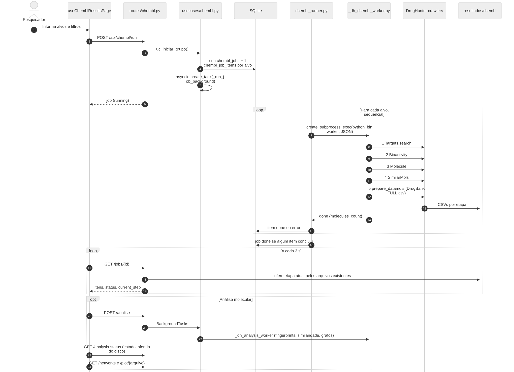

Os alvos de um grupo rodam sequencialmente, cada um em um subprocesso. Os eventos SSE emitidos pelo runner são
descartados pelo usecase (usecases/chembl.py:413-423): a UI só vê o estado gravado no banco. A etapa corrente é
inferida pelos arquivos existentes em disco.
6. ADMET e clustering¶
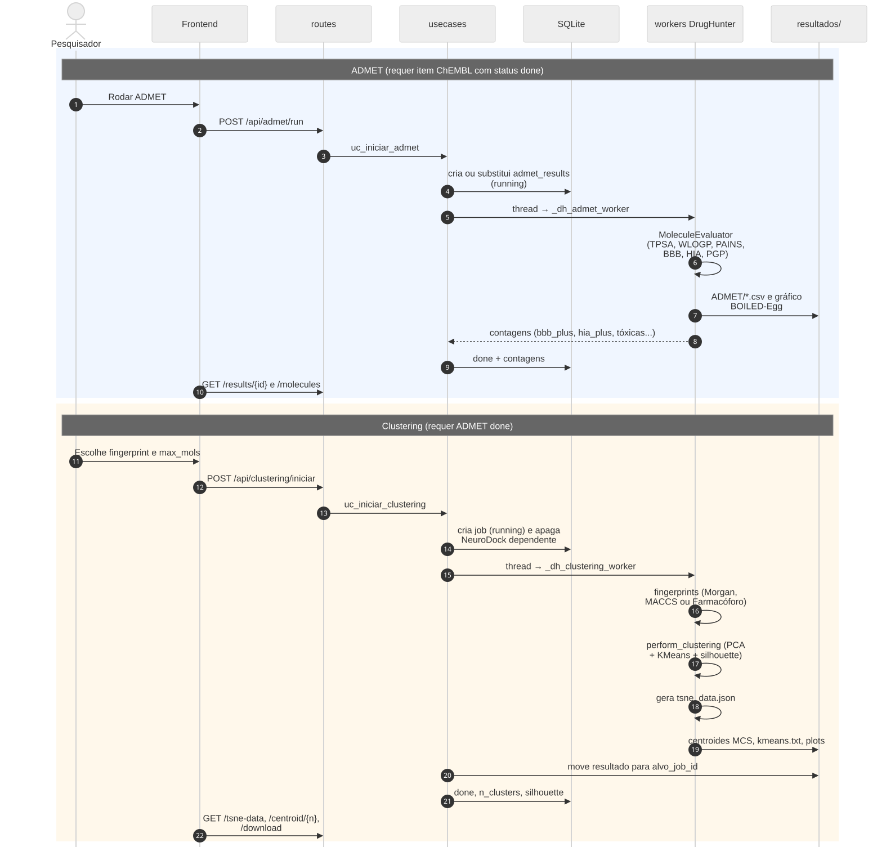

O ADMET é heurístico, não aprendizado de máquina: TPSA, WLOGP, MW, HBD/HBA, regras PAINS, SMARTS de mutagenicidade/tumorigenicidade e elipses do modelo BOILED-Egg para BBB e HIA. O clustering usa fingerprints (Morgan, MACCS ou farmacóforo), PCA em 4 componentes, KMeans com k escolhido pelo método do cotovelo e silhueta.
7. Docking de consenso¶
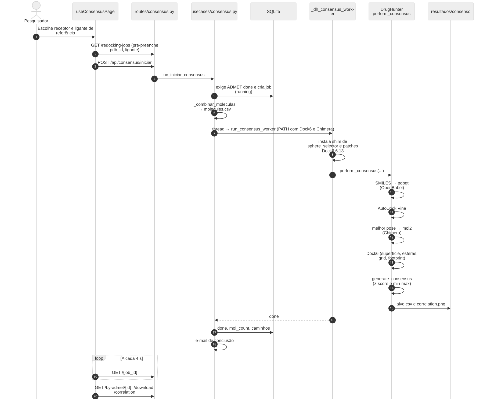

Cada molécula é encaixada em dois programas (AutoDock Vina e Dock6); os escores são normalizados e combinados
(z-score e min-max) para reduzir o viés de cada função de pontuação. A saída é alvo.csv ordenado e um
gráfico de correlação Vina × Dock6.
8. NeuroDock (treino e triagem virtual)¶
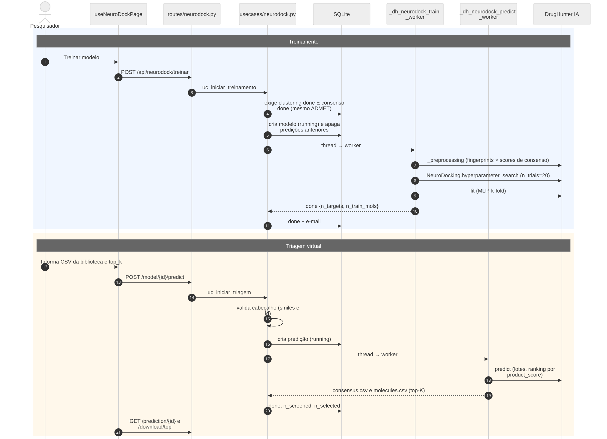

O NeuroDock é um MLP (Keras) que aprende a prever o escore de consenso a partir do fingerprint da molécula, com
busca de hiperparâmetros por Optuna (n_trials=20 por padrão no usecase; a confirmar o padrão do schema) e validação cruzada k-fold. Depois do
treino, triagem de uma biblioteca grande custa apenas inferência, em vez de docking real; as moléculas melhor
ranqueadas (product_score) podem voltar ao docking de consenso.
9. Dinâmica molecular e análise¶
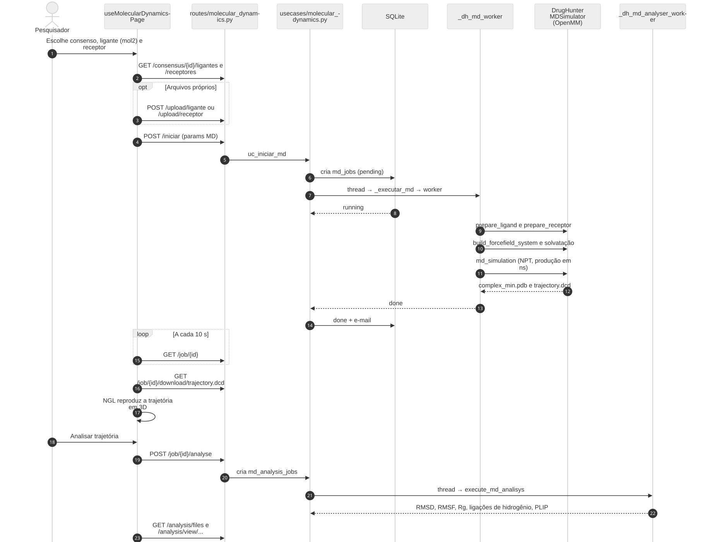

Preparação do ligante e do receptor, campo de força AMBER ff14SB + TIP3P (+ OpenFF 2.2.0 para o ligante), NPT a 310 K, passo de 2 fs e produção de 50 ns por padrão (valores do DrugHunter, ajustáveis na interface). A análise calcula RMSD, RMSF, raio de giração e ligações de hidrogênio, e gera visualização interativa (PLIP).
Fluxo de dados (DFD)¶
